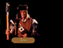
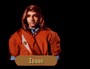

| TYR-SOG AREA |
| TYR-SOG SHOP: THREE HILLMEN PAWN |
The shop was littered with castoffs, forgotten trinkets, lost items which few would want or need to reclaim. Here it seemed tarnish and rust were the things that were prized, the crumbling items to which they clung of only secondary value.
| TYR-SOG: GEOFFREY'S TAVERN |
They entered a cheery commonroom.As if grown from the floorboards themselves, a middle aged man appeared on the spot, and he showed them to a table set next to a roaring hearth.
"Geoffrey, owner of this tavern," he said with a pleasant smile. "Might I interest you in some food today?"
| YES | NO |
|
The tavernkeeper smiled. "Splendid!" he said. "What would you like?"
|
The tavernkeeper shrugged. Joining them at the table, they exchanged jokes for the better part of an hour before other customers began to drift in. "..and what was inside but four chickens!" Geoffrey finished with a guffaw. Slapping the table, he stood and withdrew towards the door. "I don't mean to be inhospitable, but I've got paying customers and few tables, so if you don't mind..." "Certainly," Locklear said with a smile. "We need to be going anyway." |
| TYR-SOG HOUSE |
| FIRST VISIT | SECOND VISIT |
|
A man stumbled outside. "I'm Murray...town undertaker... Who's kicked it?" he asked, then amended, "I...I mean...who has departed to the other side? "You don't sound as if you believe in life after death." "The only thing lively going on in the graveyards is thanks to the living," he said with a chuckle. "Only last month, I was talking to the gravedigger who tends LaMut's yard. Told me someone had gone into his yard and dug a new grave! He has no idea who's under the stone." "Why doesn't he go and dig it up and see?" Locklear asked. He tapped the side of his head. "He's afraid a shade will get him. Supernatural humbo if you ask me. What's dead stays dead. Never seen a ghost in my life. Goodbye gents." |
No one answered the door. "He's probably passed out inside," Locklear said, remembering the man's condition. "Let's let him sleep."
|
| TYR-SOG HOUSE |
A woman was on her way out."I really can't stop to talk," she said while tying an apron around her waist. "My husband Ethan's just taken off on another of his scavenging trips for the Three Hillmen and I need to watch the place for him. He's always coming back with heaping armfuls of stuff that people have lost or just dropped places. Come by sometime!"
In a few moments she had hurried out of sight.
| HOUSE WEST OF TYR-SOG |
Three hundred pounds of madman answered the door."Umhumh," the greasy looking farmer said to himself, sizing up Locklear in a single glance. "Shoulda known that some kind of stranger had to be responsible."
"For what?" Locklear prompted.
"Don't play stupid! You been keepin' me up for the last ten nights with those...rackets to the west!"
Locklear shook his head. "I'm afraid there's been a mistake. Really. We'll be leaving you alone now."
| RIVER BANK NEAR TYR-SOG BRIDGE (Chapter 2) |
A shiny stone caught Gorath’s eye.Upon closer inspection he realized the stone wasn't actually a stone at all. He had found a piece of metal poking up through the packed dirt. He bent down to take a closer look, tried to brush away the years of dust and dirt and rocks that had swallowed it and now refused to let go.
Digging with the edge of his sword to free it from its earthen tomb, he found the item was bigger than he originally suspected, but at last it was free. He had found an ancient suit of dwarven armor known as Grey Tower Plate!
| ROAD NORTH OF TYR-SOG (closed) |
Meet: FINNLocklear shook his head.
"The cold will kill us if the moredhel don't," he said, "It's like Finn said, we'll have to consider the Inclindel blocked for the time being."
| ROAD EAST OF TYR-SOG (Exit to Zone 5: Dala) |
Gorath stared down the pass."If I recall my geography, this road skirts between the High Wold and the Teeth of the World," he said. "Ultimately it leads past the northern garrisons at Highcastle and Northwarden. What do you think? Do we take this path?"
YES:
Days passed.
To the north the mountains undulated like the scales of a great dragon, sloping ever higher as the Thunderhell Steppes gave way to the even more majestic range of the Teeth of the World. To the south, the mountains flattened out, becoming eventually a wide plain called the High Wold, which stretched south and curled at the feet of a minor range of hills.
CLOSED IN CHAPTER 6:
Owyn stopped.
He looked at the band guarding the pass ahead and called out, "Will you allow us safe passage?"
An answer was returned swiftly and with great authority, "By the order of Prince Arutha, we forbid you to come any further."
Cupping a hand to his mouth, Owyn called back, "We are on official kingdom business. You must let us pass."
"We have strict orders not to allow anyone further east," came the response.
Gorath stepped forward and stood next to Owyn. "What shall we do?"
"We are greatly outnumbered, we should leave."
| LAMUT AREA |
Meet: SQUIRE PHILLIP
| ZUN AREA |
| ZUN SHOP: KEGE'S HERBS |
Owyn sniffed. Rubbing his irritated nose, he struggled against the urge to sneeze, but the smoky interior of the shop made it hard to maintain his demeanor. More annoying, the smoke obscured his view of the vials and jars which crammed the store shelves, most of which appeared to contain herbs or incense.
| ZUN: THE GREEN CAT |
The tavernkeeper greeted them at the door.Guiding them inside to a cluster of tables, he produced a sheaf of papers which had been inked with the name of various goods and drinks, above which had been written the name of the tavern, The Green Cat.
"Quite something, eh?" the tavernkeeper said in obvious admiration. "It's to become the fashion in all the taverns and inns, I hear. I believe the word for it is menu. Unfortunately I won't have anything on it for a while. So gents, can I get you a bit to eat?"
| YES | NO |
|
"Cash up front if you don't mind," he said, rubbing his fingers together.
|
"Nothing much good to eat here today anyway," the tavernkeeper smiled. "Good day to you then."
|
| ZUN HOUSE |
| FIRST VISIT | SECOND VISIT |
|
The door swung open. Bleary eyed and smelling of alcohol, a fortyish looking man sneered at them. "Well, what do you want?" he shouted. "Out with it!" "We were hoping you could give us directions." "Directions?! Directions?!" The man's eyes blazed as he snared a wine bottle from the floor. "I'll give you directions!" Before Locklear could react, he felt the impact of the wine bottle against his skull... |
Locklear pounded on the door. No one answered. Resigned that the drunk wasn't going to face them down in a fair fight, he shrugged and turned his back. "I don't guess he's going to answer it now," he said, touching a tender spot on his head. "Let's go on."
|
| ZUN HOUSE |
Locklear knocked on the door of the small wooden house, then waited patiently for someone to answer. After several seconds, a woman appeared and ushered them inside."I don't have time to talk unless it's really important, sirs. I have to finish preparing some mushrooms that I picked for the shopkeeper over at Keges. He nearly ran out of healing restoratives yesterday and you know what they say, 'You can kill me but you can't eat me'.""That's a strange expression," Owyn said. "What does it mean?"
"To tell the truth, I don't know," the woman replied, her face brightening with a wide grin. "It was something that the Baron Kevin used to say. Never could make any sense out of it. Now if you'll excuse me I really must be running along."
| ROAD SOUTH OF ZUN (Exit to Zone 2) |
The pass was empty."It's a five day journey if the sign is to be believed," Locklear remarked. "It would also be an excellent place to stage an ambush. Think we should take the chance?"
YES:
Days passed.
Disliking the exposed feeling created by the defile, they moved quickly during the nights and left the days to resting under rocky overhangs and listening for assassin's footsteps. At last, footsore and road weary, they emerged near the coast of the Bitter Sea.
| TEMPLE OF KILLIAN AREA |
Enter: TEMPLE OF KILLIAN
| JOSEPH THE ANIMAL'S (Armorer's Shop) |
| FIRST VISIT (Repair needed) |
Locklear gasped.Severed heads spun in grey space before him as disembodied arms and legs flailed together with a sound much like the clashing of...kitchen scullery? Looking closer, he realized that the body parts were not in fact, body parts, but instead very tarnished pieces of armor that had been suspended from the shops rafters.
"You there, careful! It may all come down on our heads!" A gnomish man approached from the rear of the shop, a match held tight between his fingers. "Should have knocked. Nearly didn't hear you from upstairs - I can see why you came in though. Your armor is in quite a state. Another blow to your suit and you'll look like those lot up there. I'll fix you right up."
"If it's all the same, I'd prefer to buy an armorers hammer..."
"I'm sure you would, but I'm not in the business of ruining my livelihood. I'm an armorer and I make my living in repairs. People go fixing their own and I'm out of business. Right?"
Everywhere Locklear looked, polished metal gleamed. As much a temple to war as any Temple of Tith, the cramped shop contained a startling variety of armor.
Locklear surveyed their equipment. "Which of your items would you like repaired, today?" the mender asked.
| SECOND VISIT (Repair needed) | NO REPAIR NEEDED |
|
The hermit waited inside the door. "Ah, you've come back. Well then, I can go over your armor and do what I can."
|
A voice shouted at them from the house. "Go away! I am very, very busy at the moment!" Locklear took a step forward, clearing his throat, "We would like to talk..." "Have you candle wax in your ears? I said I was BUSY! If you need some armor repaired you can leave it for a few days -- but for now PLEASE GO AWAY!" "Since our armor is all in good repair, perhaps we should leave," said Locklear, turning on his heels.
|
WOMAN:
Keep your bloody sovereigns! I've decided--I'm not leaving!
LOCKLEAR:
Why should we want you to leave?
WOMAN:
I refuse, you hear me, I REFUSE! Now go away!
"Your hands," a voice commanded.
"Pardon? What did you say?" Locklear asked.
"Show me your HANDS," the voice repeated from the darkness. "Palms up, thumb out. And don't
make any sudden moves."
Faintly amused, Locklear complied and did as asked, extending both his hands for the stranger's
examination. On command he turned his hands over, again waiting for the judgement of the voice
in the house.
"You pass," the voice in the house pronounced at last, but his voice did not sound relieved.
"All right then, listen carefully and don't ask any questions."
"What was all that hand business about?"
"I said no questions," the voice snapped. "Suffice it to say, I know that you can be trusted
with what I have to say because you don't bear the sign. You should be on the lookout for
scrolls or anyone bearing scrolls. Read them carefully. They could save your life. Be safe."
"Scrolls?" Locklear asked. "Why? What's on these scrolls? Does it have anything..."
Abruptly the door slammed shut.
Locklear shrugged. "Looks like he isn't in the mood to discuss the scrolls any further. I
wonder what all that sign business was about."
"Come in. My name's Lucan," he introduced himself as he slapped his guests on their backs.
"Nice to meet you. I haven't had visitors in some while. You know it gets kind of lonely up
here and the kids don't come down too often. You have kids? They're a marvel don't you think
and..."
Locklear seized Lucan's wrist and gave it a savage twist, forcing a shiny sovereign to fall
from the man's pained fingers. Everyone watched in shocked silence as the gold clattered to the
floor.
"I almost didn't feel you nabbing that from my purse," Locklear said. "You're not bad thief,
but not good enough."
"Don't kill me," Lucan pleaded. "Please. I don't have anything to give you, but I'll do anything.
I'll...I'll teach you!"
"You'll what?" Owyn sputtered.
"I'll teach you, yes, that's it!" Lucan said, his face brightening. "Spare my life and...and
I'll teach you what I know about locks! Everything! What do you say?"
"No, no, no. You have my word. Just sit here and I'll be right back. I'll go and fetch my
practice locks and I'll be right back."
"Nice try, but no. You're staying here." Locklear pushed Lucan to a seated position. "Just tell
Owyn where your practice locks are and he'll fetch them. Then we'll start our lessons..."
Having resigned himself to the fact that he wasn't going to escape, Lucan lectured and
demonstrated for the better part of the day before he set his practice locks aside.
"That's it," he mumbled, wiping perspiration from his brow. "That's all I know."
"Good enough," Locklear said. "I think we will be on our way now. And Lucan, for your continued
health, I would suggest that you get out of the thieving business."
Staring at the thief contemptuously, Locklear scowled. "We're leaving now. I would suggest you
make yourself scarce around here. I'm sure the local authorities will be most interested in your
educational programs."
"It appears that Lucan is gone for a while," Owyn read. "This note promises that he will be
back very shortly."
OWYN:
What is this place?
GORATH:
It's a charnel house. When the graveyards fill up, they have to make way for new bodies, so they
bring the old bones here. Let's go inside and have a look around.
OWYN:
I've got a better idea. How about I stay out here and you go inside and have a look around?
"I need to take another look around," Gorath replied. "You can stay out here if you like."
It took some time to get everyone on their feet again.
"Lets see if they left anything behind in the house," Locklear said.
"It's a two day journey if the sign is to be believed," Gorath remarked. "Think we should
attempt it?"
YES:
The trip was dull.
With only the occasional cold draft to chill their bones as they moved through the pass, it
was a relief to finally feel the more temperate winds typical to the southern reaches of
the Kingdom.
"This road branches a little further on," James said. "To the south it leads
towards Eggley and eventually Krondor. To the east, it leads through the Dimwood
forest. Which way do you think we should take?"
With only the occasional cold draft to chill their bones as they moved through
the pass, it was a relief to finally feel the more temperate winds typical to
the southern reaches of the Kingdom.
For days they moved in mist, the moisture soaking into their clothes by day and
chilling them by night. When at last the mountains sloped downward, the fog
lifted and they found themselves standing at the edge of a great wood.
"At all costs, travellers should avoid contact with Orno, known widely as Orno the Pale" Owyn
read aloud. "A contagion of unknown proportions has already lead to the illness of three people.
Avoid any contact with..." The door swung open. "...him." Owyn straightened himself as a haggard
looking man in his mid twenties appeared in the doorway, his face covered with a bloody
handkerchief. "You are Orno?"
"Yessss," he wheezed through his handkerchief. "And you're...on...my dohstep. Get away afore you
get yourselves in-fec-ted."
"What is wrong with you?"
The man shook his head. "Don't know, doctor's don't know, priests don't know. Nobody knows.
Only persons that's survived is Michele the Healer, but she's a ways off in Loriel."
"I see," Locklear said. "Well, we'll be off now. Sorry to have bothered you."
Again the man nodded. "I'z sure you will be. I'z sure of it."
"Guess they're not too interested in doing business right now," Owyn said.
Peering at them without opening the door all the way, a thin man rubbed the
sleep from his eyes. "I'm not open for business right now. You'll have to come
back later," he said.
"Business?" Glancing down the side of the house, Locklear looked for a sign or
shingle, but none was in evidence. "What do you sell?"
"I'm a gems dealer---Keifer Alescook---but I don't have anything in stock right
now, he said with irritation. "It's likely to be several weeks before I get
anything again, so please go away."
Before Locklear could say another word Keifer had closed the door.
"I'm Keifer Alescook. Have you come to buy or sell some gems?" he questioned in
a frail voice.
Locklear moved closer to the door. "We're looking for a ruby that may have been stolen
by a group of Grey Warriors. Have you purchased any gemstones from such men?"
"I don't know what you're talking about," the man said quickly. "I don't buy
stolen merchandise. You might try talking to a fellow I ran into north of
Hawk's Hollow about it. Name's Isaac if I recall." The man looked about
nervously. "I'm...er...not open for business right now. You'll have to come back
later."
Before Locklear could say another word Keifer had closed the door.
Careful not to divulge any details about their trip, Locklear steered the conversation towards
the townspeople. "Everyone here's fine folks, all except for Michele the Healer. I hope you're
not planning to visit her."
"Why?" Locklear asked.
"She's a snake," he said. "Told me I was going to die, but you know what? I got better. Oh, I
felt horrible enough for three or four days and thought I was going to die, but no, I made it
through alive. I tell you, I think she and Orno the Pale have some kind of deal. He's giving
them some kind of contagion and then she's administering some kind of phony medicine. It's
indecent."
The house was small but well appointed, its furniture very tasteful indeed for someone who
seemed to be only a commoner. "You require my services," she stated. "You are ill."
Locklear shifted in his chair. "You sound very certain of yourself."
"You have the signs. I can heal you, but I require payment. 25 sovereigns. Will you pay?"
"Very well," she said, taking the money from Locklear. "Lay back for a moment and I will do my
work." Unplugging a small vial of a clear liquid, she passed it under her patients' noses and
then patted each on the head. "You are all healed. You may go now."
"Then it seems you will die," she replied. "After the fever takes your mind of course.
Goodbye travellers. I feel sorry for you."
"As yet, I think we will manage on our own." Locklear said as he thanked their hostess. "You
have been very kind."
HAWK'S HOLLOW AREA
Meet: ISAAC
HAWK'S HOLLOW SHOP: THE WOOLEN MAN
The lay of the goods store was comfortably familiar, arranged in such a common sense fashion
that it took only a few moments for Locklear to locate the items which interested him.
HAWK'S HOLLOW INN: DUSTY DWARF INN
Except for a thin strip of floor that led between the door, the counter and the
stairs, a grey cowl of dust coated the inn's fixtures. The patrons of the inn
seemed similarly stagnant as they glanced up lazily from their mugs of ale and
brandy.
HAWK'S HOLLOW HOUSE
FIRST VISIT
SECOND VISIT
Locklear knocked on the door of the small house and after several minutes an angry woman
appeared at the window and began to scream at them.
Locklear knocked on the windowpane. "She's not answering," he said.
HAWK'S HOLLOW HOUSE
FIRST VISIT
SECOND VISIT
The door opened a fraction of an inch.
No one answered the door.
HAWK'S HOLLOW: LUCAN'S HOUSE - First Visit
A man invited them inside.
YES
NO
Locklear arched an eyebrow... "Very well, Lucan," he said. "You may teach us, but if we leave
here with any less than we came in with..."
Lucan sweated.
SECOND VISIT
INVALID?
Locklear smiled. "Lucan's locked his door," he said. "Can't say that I blame him."
A sign hung by the door.
CHARNEL HOUSE (East of Hawk's Hollow)
FIRST VISIT
SECOND VISIT
When no one answered their knock they peered into the hut through an ash stained window pane.
Inside they could see bones strewn across the dirt floor like forgotten toys, playthings
of a death-god long gone mad. Against the far wall eyeless skulls were heaped one atop another
with no particular sense of order or orientation.
"Oh no," Owyn cried. "Is it really necessary to come back to this place?
AMBUSH HOUSE (East of Hawk's Hollow)
AFTER COMBAT:
EAST OF HAWK'S HOLLOW: Southern Exit (to Zone 2)
The pass ahead was empty.
EAST OF HAWK'S HOLLOW: Northern Exit (to Zones 2/7)
Mist floated in the pass.
SOUTH
EAST
The trip was dull.
They moved east.
LORIEL AREA
Enter: TEMPLE OF ISHAP
ORNO'S HOUSE (South of Loriel)
A piece of paper dangled from the doorknob.
LORIEL SHOP: KINGDOM GOODS
The lay of the goods store was comfortably familiar, arranged in such a common
sense fashion that it took only a few moments for Owyn to locate the items which
interested him.
LORIEL INN
A closed sign hung by the door.
LORIEL: KEIFER ALESCOOK
Quest not Active
Quest Active
The door opened slightly.
A thin little man greeted them at the door.
LORIEL HOUSE
The house's occupant was talkative.
LORIEL: MICHELE THE HEALER
Michele escorted them inside.
YES (enough)
YES (not enough)
NO
The exchange was made.
Locklear upended his empty pouch. "It seems we cannot pay," he said.
Locklear shook his head.